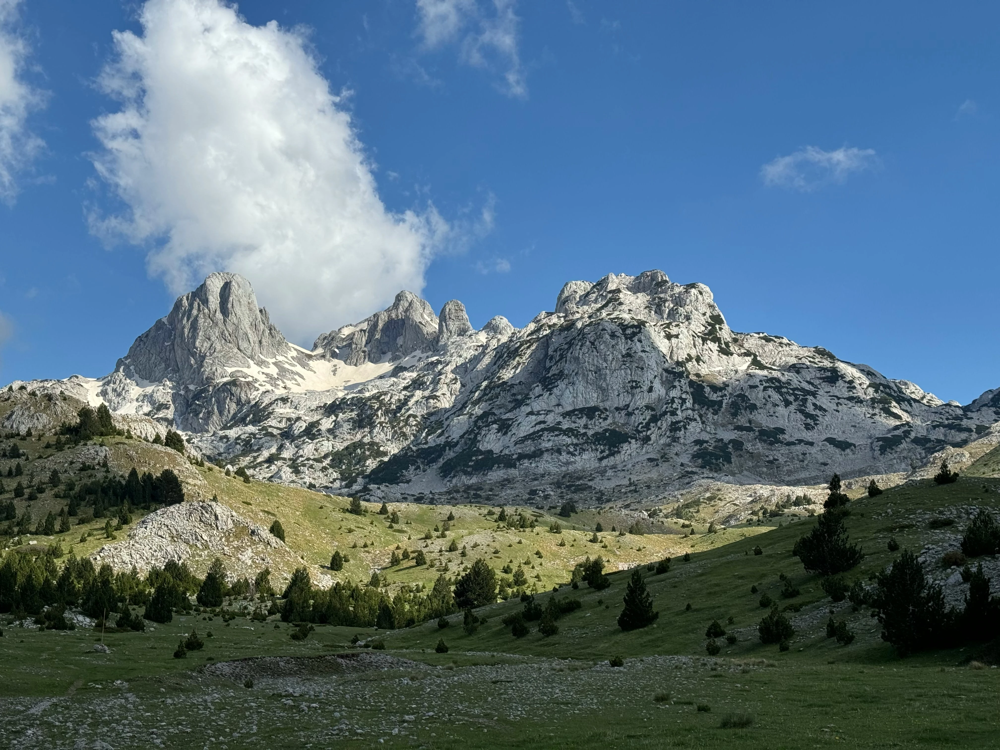
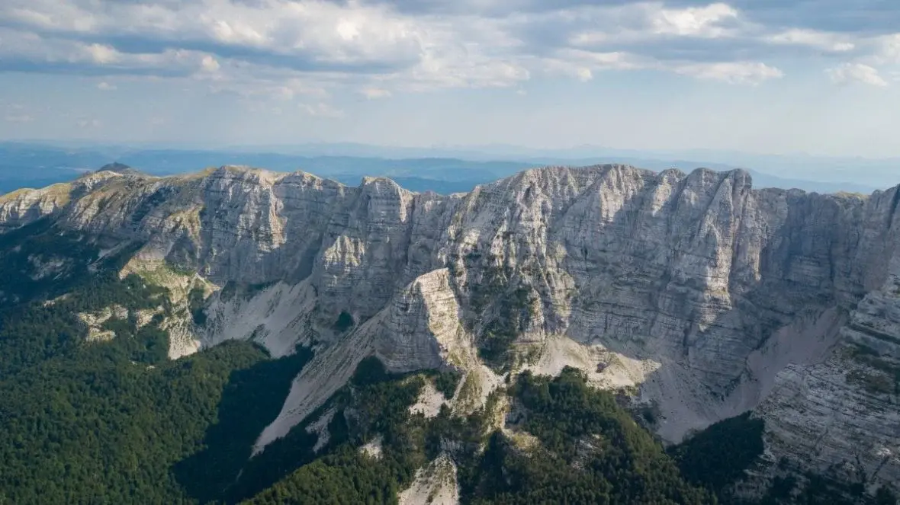
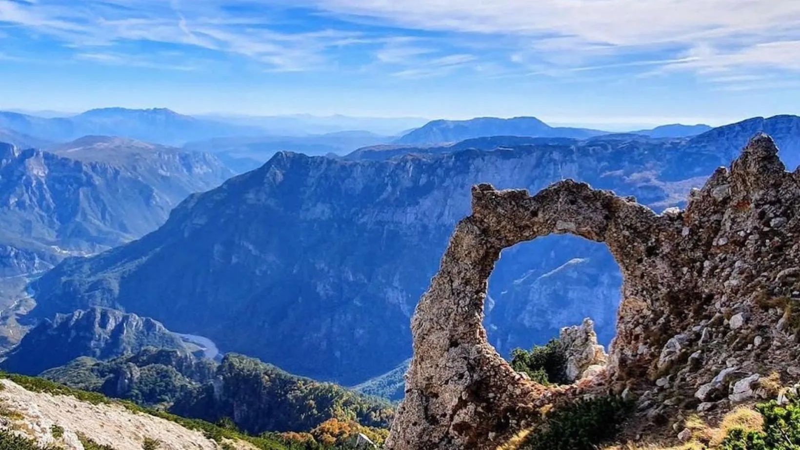
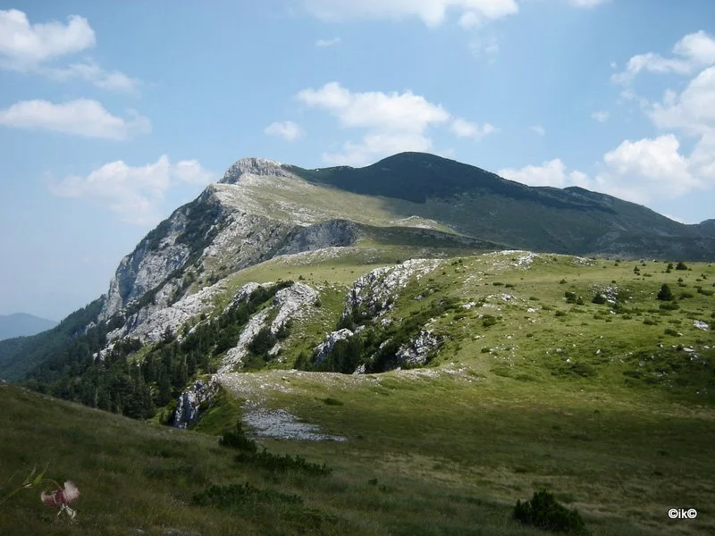
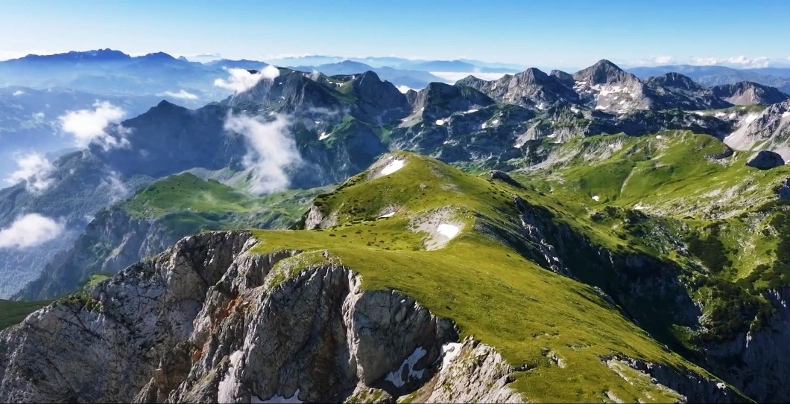
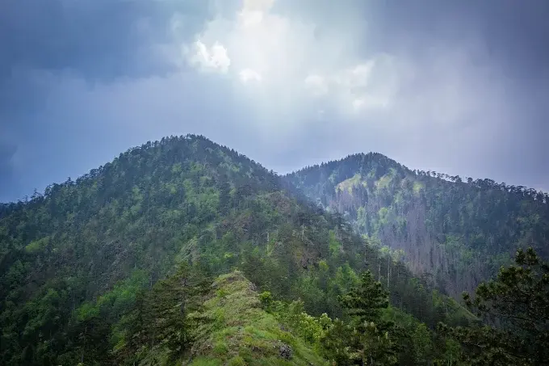

Planina se ne osvaja. Njoj se vraćaš.
5. dec · 75 godina društva Planinarska zabava Subota u 19:30, hotel Rudar, Minero. Večera i muzika, 50 KM.Historija planinarskog društva
Inicijativni odbor činili su Halid Čokić, Branko Stojanović, Mustafa Kapidžić, Čoko Jakov, Eduard Pavlović, Paša Abidinović i brojni drugi zaljubljenici u prirodu i planinarstvo. Osnivačka skupština Planinarskog društva "Konjuh" održana je u zgradi današnjeg Narodnog pozorišta u Tuzli, dok su prve članske karte štampane u Tuzlanskoj štampariji zahvaljujući Obradu Jakšiću.
Naziv "Konjuh" odabran je kao simbol jedne od najljepših planina sjeveroistočne Bosne, ali i kao omaž legendarnoj pjesmi "Konjuh planinom", koja je kroz stihove čuvala sjećanje na bogatu historiju Tuzle i njenog kraja. Za prvog predsjednika Društva izabran je Halid Čokić, a među prvim članovima Upravnog odbora bili su Vasilije Skripta, Eduard Pavlović, Čoko Jakov, Galib Kabadaić, Paša Abidinović, Mustafa Kapidžić i drugi istaknuti ljubitelji prirode. Njihov entuzijazam postavio je temelje društva koje će u narednim decenijama okupljati generacije planinara i promovisati planinarsku kulturu u Bosni i Hercegovini.
Cijela priča društvaŠest planina kroz jednu nezaboravnu sezonu

Prenj

Velež

Čvrsnica

Bjelašnica

Maglić

Konjuh